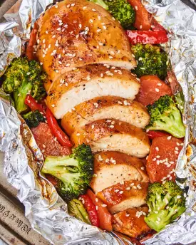

Teriyaki Chicken Foil Packets

Description
This takeout-inspired foil packet recipe is impossibly easy: Boneless, skinless chicken breasts and a mix of vibrant veggies are covered in store-bought teriyaki sauce and grilled to perfection.
Ingredients
- 1 small head broccoli
- 2 medium red bell peppers
- 2 large carrots
- 2 cups teriyaki sauce, divided
- 1 1/2 teaspoons kosher salt, divided
- 1 teaspoon freshly ground black pepper, divided
- 4 (6-ounce) boneless, skinless chicken breasts
Steps
- Heat an outdoor grill to medium-high, direct heat. Prepare 4 (10-inch long) sheets of aluminum foil.
- Prepare the following, placing them all in the same large bowl: Cut 1 small head broccoli into florets, slice 2 medium red bell peppers, and peel and slice 2 large carrots. Add 1 cup of the teriyaki sauce, 1/2 teaspoon of the kosher salt, and 1/2 teaspoon of the black pepper. Toss to combine.
- Divide the vegetable mixture between the 4 sheets of foil, leaving a 2-inch border on all sides. Season 4 boneless, skinless chicken breasts with the remaining 1 teaspoon kosher salt and remaining 1/2 teaspoon black pepper, then place a breast on each vegetable pile. Pour the remaining 1 cup teriyaki sauce over the chicken.
- Fold the sides of the foil to meet over the center, then crimp the edges together to create completely sealed packets. Place the packets directly onto the grill grates, cover, and grill until the chicken is cooked through and the vegetables are tender, 20 to 25 minutes. Let cool for 10 minutes before opening the packets and serving.